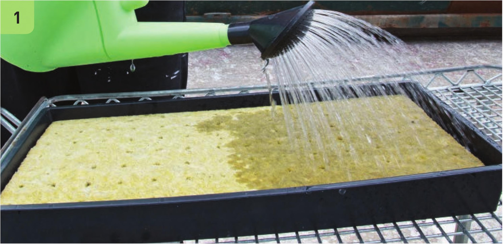
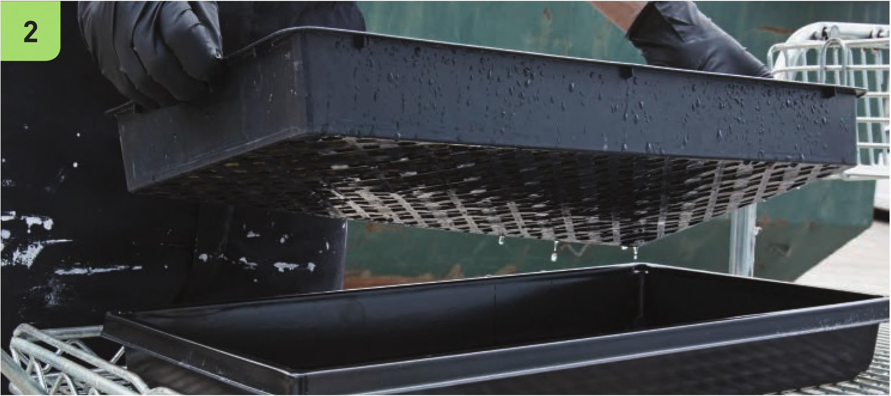

STARTING SEEDS IN STONE WOOL Starting seeds in stone wool can be incredibly easy and involve very little effort. The most important factors for success are having the proper amount of light, airflow, heat, and humidity. There are many different techniques for starting seeds in stone wool; the methods I describe have repeatedly worked for me for my hobby hydroponic and commercial hydroponic systems. There are definitely more bare-bones methods for starting seeds in stone wool that involve far less equipment, but my goal is to give you a method that will provide a high likelihood of success with minimal maintenance. MATERIALS Stone wool starter cubes (Grodan A-OK 36/40) 10 x 20" mesh bottom tray 10 x 20" solid bottom tray Nutrient solution Seedling heat mat with controller Seeds Labels and marker Misting bottle Vented humidity dome 2' 4-bulb T5 fluorescent light Fan 1 Place the stone wool seedling sheet into the 10 x 20" mesh bottom tray. Rinse and prepare the stone wool with a half-strength nutrient solution. 2 Let any excess nutrient solution run off the seedling sheet through the mesh bottom tray. 3 Place the mesh bottom tray into the solid bottom tray. The stone wool should be damp to the touch but not sitting in water. 4 Place the solid bottom tray on the seedling heat mat. 138 DIY HYDROPONIC GARDENS

